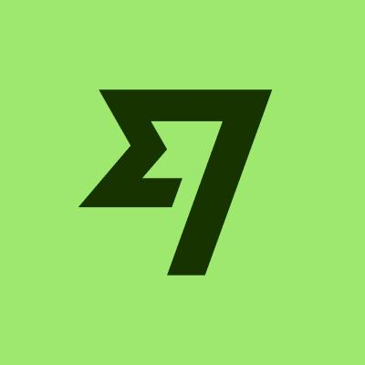

Vocês irão embarcar para Santiago, Chile. Aproveitem essa oportunidade para explorarem novos lugares e criarem ótimas e inesquecíveis memórias juntos, afinal a vida a dois é feita de experiências compartilhadas, e nada melhor que uma viagem para celebrar e criar uma lembrança eterna desse momento tão importante na vida de vocês. Vivam aventuras emocionantes, caminhem por paisagens deslumbrantes, saboreiem pratos típicos, mergulhem em culturas diferentes e fortaleçam ainda mais os laços que os unem. Vocês merecem!
Agora que o destino foi revelado, é hora de se preparar. Antes de fazerem as malas, precisam fazer os passaportes para darmos continuidade nessa aventura. O procedimento é feito pelo site da Polícia Federal e envolve o agendamento de um atendimento presencial. Corram!
Clique e siga as instruções
Passeios que Reservamos
Para aproveitarem o destino

Termas de Colina
ReservadoEstas piscinas de águas termais, situadas aos pés da Cordilheira dos Andes, proporcionam um momento de relaxamento ao ar livre com uma vista de tirar o fôlego.
Ponto de Encontro: Camino Farellones 15000, Lo Barnechea, Región Metropolitana, Chile
Data e Horário: Segunda a Domingo: 10:00 - 20:00
Telefone: +56 2 2233 0000

Valle Nevado
ReservadoO Valle Nevado é a principal estação de esqui da América do Sul em número de visitantes. Possui toda infraestrutura para quem quer praticar esportes de neve. Possui 34 pistas de esqui de quatro níveis diferentes, totalizando 40 quilômetros de pistas.
Ponto de Encontro: Camino Farellones 15000, Lo Barnechea, Región Metropolitana, Chile
Telefone: +56 2 2233 0000
Data e Horário: Segunda a Domingo: 10:00 - 20:00
Recomendações Extras
Para explorar a cidade

Pátio Bellavista
GratuitoO Patio é um famoso centro comercial, gastronômico e cultural, sendo um dos locais mais visitados por brasileiros que vão ao Chile. Você pode visitá-lo a qualquer momento do dia. Seja para almoçar, jantar, ou fazer compras. Ótimo para experimentar a vida noturna em Santiago.
📍 Como chegar🕘 Domingo a terça-feira: 10h às 01h - Quarta-feira: 10h às 02h - Quinta a sábado: 10h às 03h.

Sky Costanera
Entre 100 e 115 R$Mirante instalado no maior prédio da América do Sul e que oferece uma visão 360° da capital chilena. A adrenalina de sentir a cidade a seus pés. Aprecie a Cordilheira dos Andes e surpreenda-se com a arquitetura moderna de Santiago, além de um pôr do sol inesquecível.
📍 Como chegar🕘 Todos os dias das 10h às 22h.

Restaurante Giratório
Entre 100 e 200 R$O Giratorio é um restaurante localizado no topo do Sky Costanera no bairro Providencia, um dos bairros mais bonitos de Santiago, mais especificamente na Av. Nueva Providencia, 2250.
📍 Como chegar🕘 Sexta e Sábado: 13h às 21:30 Domingo: 13h às 15:30 Segunda a Quinta: 13h às 21h.

Bairro Paris-Londres
GratuitoO Bairro Paris-Londres é um bairro turístico no centro histórico de Santiago, Chile. O bairro é conhecido pelo seu estilo arquitetônico europeu e pelas suas ruas estreitas e sinuosas.
📍 Como chegar🕘 Qualquer horário.

Plaza de Armas
GratuitoFundada por Pedro de Valdivia em 1541, originalmente tinha como função ser um campo de treinamento militar e centro estratégico do assentamento espanhol para sua expansão e conquista.
📍 Como chegar🕘 Qualquer horário.

Palacio de la Moneda
GratuitoTambém conhecido como “Palacio Velho” o palácio da moneda é um lindo edifício de puro estilo neoclássico com influencias do dórico romano que vale a pena conhecer, ela se encontra nas ruas Morande com Huérfanos.
📍 Como chegar🕘 Segunda a quinta: 15h e 16:30 Sexta 15h.

Cerro Santa Lucia
GratuitoUns dos lugares mais conhecidos de Santiago, embora não muito alto, se eleva uns 70 metros e oferece umas das melhores vistas de 360 graus da cidade, O cerro tem sido parte dos acontecimentos mais importantes de Santiago desde seu nascimento oficial e inclusive desde muito antes.
📍 Como chegar🕘 De Terça a Domingo das 09h às 19h

Cerro San Cristóbal
Entre 10 e 15 R$Com uma altitude de 880 m.s.n.m. o cerro San Cristóbal é uns dos lugares mais emblemáticos de Santiago. Pode ser recorrido a pé, em carro ou bicicleta. Nele você encontrará o santuário e mirador da Virgem do cerro São Cristóbal, o Zoológico Nacional de Chile, Jardim Japonês, o funicular e o teleférico. No topo tem um pequeno centro comercial, onde pode comprar camiseta, artesanato e presentes típicos. Para subir e descer também pode usar o funicular ou o teleférico.
📍 Como chegar🕘 Terça a Domingo das 10h às 19h45.

Paseo Bandera
GratuitoDentro do centro histórico de Santiago, esta localizada a rua Bandera, começa pelo sul desde Avenida Libertador General Bernardo O´Higgins mais conhecida como “Alameda” e continua ao norte ate o rio Mapocho. No seu melhor momento numerosos bares e restaurantes eram frequentados por escritores e poetas, na atualidade a colorida rua abriga importantes prédios históricos e entidades financeiras do pais como a Bolsa de comercio de Santiago e Museu de Arte Precolombino.
📍 Como chegar🕘 Qualquer horário.

Parque Bicentenário
GratuitoO Parque Bicentenário de Vitacura é uma das áreas verdes mais importantes de Santiago, com uma extensão total de 27 hectares ao longo das margens orientais do rio Mapocho. Está localizado entre o Vial Pérez Zujovic Knot e a Isabel Montt Street. O parque abriga cerca de 5.460 árvores, das quais mais de 2.600 são espécies nativas, o que contribui para a riqueza de sua biodiversidade. Uma das maiores atrações é a adorável lagoa do norte, o acesso à Isabel Montt Street. Esse habitat coexiste harmoniosamente os cisnes em preto, Taguas, garças e trilhas, fornecendo um show natural que encanta os visitantes.
Como chegar📍 🕘 Todos os dias das 08h às 23h.
Alguns Museus
Para quem curte arte, história e cultura

Museo Histórico Nacional
O belíssimo Museu Histórico Nacional está localizado bem na Plaza de Armas, no centro de Santiago. É um excelente lugar para passear pela história do Chile e seus costumes, onde poderão ver peças dos povos originários como prataria Mapuche e da cultura Rapa Nui.
📍 Como chegar🕘 Domingo a terça-feira: 10h às 01h - Quarta-feira: 10h às 02h - Quinta a sábado: 10h às 03h.

Museo Nacional de História Natural do Chile
Foi fundado em 1830, é um dos museus mais antigos da América, está localizado no Parque Quinta Normal, é o museu mais visitado entre todos os museus do país. No salão principal fica um enorme esqueleto de baleia e mamíferos embalsamados, já nas outras salas está a exposição “biogeográfico” com fotos, vídeos, mapas e cenários. Conta a história do universo passando por cada ecossistema de clima e vegetação do deserto até a patagônia.
📍 Como chegar🕘 Domingo a terça-feira: 10h às 01h - Quarta-feira: 10h às 02h - Quinta a sábado: 10h às 03h.

Museo de la Memoria y los Derechos Humanos
Dedicado à memória daqueles que foram perseguidos, torturados e desparecidos durante a ditadura militar do general Augusto Pinochet, assim como todas as pessoas que perderam a vida como vítimas das diversas ditaduras que assolaram América Latina e o mundo. Uma exposição absolutamente emocionante, pois conta com gravações em áudio, jornais revistas, fotografias e imagens de vídeo dos três golpes militares minuto a minuto e do período de repressão que se seguiu. Um passeio por este museu vai lhe ajudar a entender um pouco melhor a realidade chilena e o que significou para seu povo este difícil período.
📍 Como chegar🕘 Domingo a terça-feira: 10h às 01h - Quarta-feira: 10h às 02h - Quinta a sábado: 10h às 03h.
.png)
Museo Interactivo Mirador (MIM)
É o museu privado mais visitado de Chile, desde sua criação no ano 2000, um museu interativo dedicado à ciência, 70% dos seus visitantes são jovens e crianças, mas sem dúvida é uma visita divertida e educativa para todas as idades. Vale a pena dedicar umas 3 horas para viver a experiencia que este museu oferece, o maior atrativo é a casa sísmica, um simulador de terremoto, nele você poderá ter uma ideia de como foi o terremoto de 27 de fevereiro de 2010 no Chile. Tem salas de eletromagnetismo e robótica para aprender conceito básicos da ciência.
📍 Como chegar🕘 Domingo a terça-feira: 10h às 01h - Quarta-feira: 10h às 02h - Quinta a sábado: 10h às 03h.
Museo Nacional de Bellas Artes
Criado em 1880 com o nome de Museu Nacional da Pintura, pois só existiam pinturas, a coleção foi crescendo com o tempo e o local onde hoje é o Museu Nacional de Bellas Artes começou a ser construído em 1901, ficando pronto em 1910 comemorando os 100 anos do Chile. Hoje existem mais de 5 mil obras, como estatuas de mármore, escultura, desenho e pinturas de artistas chilenos e internacionais, que vão desde os tempos coloniais até nossos dias. Algo a destacar no salão principal é o teto de vidro feito na Bélgica.
📍 Como chegar🕘 Domingo a terça-feira: 10h às 01h - Quarta-feira: 10h às 02h - Quinta a sábado: 10h às 03h.
Aplicativos e Ferramentas
Para facilitar a sua viagem
Fique conectado
O ideal é adquirir um Chip Internacional ainda no Brasil, para que já chegue ativado e pronto para uso. Recomendamos o Nomad, que é um Chip Virtual e pode ser adquirido através do aplicativo Nomad.

Fique conectado
Uma opção internacional que permite converter e gastar dinheiro em diversas moedas com tarifas mais baixas que os bancos tradicionais. Com ele, você pode carregar o saldo pelo app, acompanhar os gastos em tempo real e utilizar tanto no transporte quanto em compras no exterior, tudo de forma segura e econômica.
Aos Noivos
Uma mensagem especial
Este presente é um pedacinho do que sentimos por vocês dois.
De Edlaine, que mesmo longe — cada hora em um canto, mas sempre presente em sentimento — guarda no coração uma admiração antiga pelo noivo. Um carinho cultivado desde os primeiros sorrisos, que só cresceu com o tempo. E hoje, esse afeto se estende naturalmente à noiva, que com seu jeito doce e acolhedor, conquistou não só o coração do noivo, mas também o dela. Ver vocês juntos, felizes e construindo um caminho lado a lado, é um presente para quem acompanhou essa história de longe, mas sempre com o coração pertinho.
De Larissa, ou melhor “Iaia”, tia mais nova do noivo, que cresceu ao lado dele dividindo risos, histórias e segredos. Sempre o viu como um porto seguro — um irmão que protege, que ensina, que cuida. E agora vê esse mesmo cuidado se transformar em amor na vida a dois. A noiva chegou e, de forma natural, encontrou espaço no coração de Larissa. Alguém que veio para somar, para fazer brilhar ainda mais esse amor bonito.
De João, o tio recém-chegado na família, mas que já sente que faz parte de algo muito maior. Desde o primeiro contato, criou um carinho enorme por vocês dois. Porque quando a gente encontra pessoas de coração leve e verdadeiro, como vocês, o afeto vem rápido e fica. A torcida dele é gigante, o carinho é sincero, e o orgulho de fazer parte desse momento é imenso.
De nós três, com nossas histórias e olhares diferentes, nasce esse presente — feito com amor, para celebrar o amor de vocês. Que essa nova fase seja leve, bonita e cheia daquilo que já está tão presente entre vocês: parceria, respeito e alegria.
Com muito carinho Any, Lala e Jão